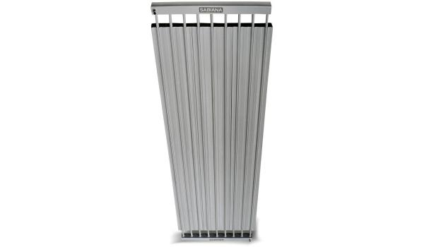

Ventiliatoriniai šildytuvai - kainos nuo 12.99 € | Kaina24.lt
 Prisijunkite Prisijunkite prie sumanių pirkėjų bendruomenės!
Prisijungę galėsite žymėtis norimas prekes.
Arba
Prisijungti su el. paštu Nenaudoji Facebook arba Gmail? Ir neturi Kaina24.lt paskyros? Registruotis su el. paštu
Pamiršai slaptažodį? Priminti slaptažodį
Pasirinkite žemiau
Prekės ženklai
BEPER 9Pardavėjai
Rde.lt 22Susiję paieškos
klimato kontrolės įrenginiai renginiai kontrole klimato kontrole smulkioji buitinė technika toriniai technika buitine klimato kontrolės technika jata tv64 electrolux efh/s-1120 beper+ri.080Apie projektą
Kaina24.lt - internetinės prekybos portalas. Čia rasite informaciją apie daugiau kaip 300 parduotuvių bei 2 000 000 prekių . Ieškokite įvairiausių prekių, vertinkite jas, lyginkite skirtingų pardavėjų kainas, raskite pigiau ir sutaupykite!
Ventiliatoriniai šildytuvai
(22) Prekės ženklai, ... Prekių eiliškumas pigiausia viršuje brangiausia viršuje pagal abėcėlę Smulkioji buitinė technika / Klimato kontrolės įrenginiai / Ventiliatoriniai šildytuvaiChanger N26 ventiliatorinis šildytuvas
12.99 €
Smulkioji buitinė technika / Klimato kontrolės įrenginiai / Ventiliatoriniai šildytuvai
Deco D-321 ventiliatorinis šildytuvas
12.99 €
Smulkioji buitinė technika / Klimato kontrolės įrenginiai / Ventiliatoriniai šildytuvai
Changer N23/ NFD20A ventiliatorinis šildytuvas
13.49 €
Smulkioji buitinė technika / Klimato kontrolės įrenginiai / Ventiliatoriniai šildytuvai
Beper RI.092 ventiliatorinis šildytuvas
15.49 €
Smulkioji buitinė technika / Klimato kontrolės įrenginiai / Ventiliatoriniai šildytuvai
Beper RI.090 White ventiliatorinis šildytuvas
15.99 €
Smulkioji buitinė technika / Klimato kontrolės įrenginiai / Ventiliatoriniai šildytuvai
Beper RI.094 ventiliatorinis šildytuvas
16.49 €
Smulkioji buitinė technika / Klimato kontrolės įrenginiai / Ventiliatoriniai šildytuvai
Adler AD 7702 Black ventiliatorinis šildytuvas
16.49 €
Smulkioji buitinė technika / Klimato kontrolės įrenginiai / Ventiliatoriniai šildytuvai
Beper RI.096 ventiliatorinis šildytuvas
18.49 €
Smulkioji buitinė technika / Klimato kontrolės įrenginiai / Ventiliatoriniai šildytuvai
Beper RI.093 ventiliatorinis šildytuvas
18.99 €
Smulkioji buitinė technika / Klimato kontrolės įrenginiai / Ventiliatoriniai šildytuvai
Comfort C-320 ventiliatorinis šildytuvas
19.99 €
Smulkioji buitinė technika / Klimato kontrolės įrenginiai / Ventiliatoriniai šildytuvai
Jata TV64 ventiliatorinis šildytuvas
19.99 €
Smulkioji buitinė technika / Klimato kontrolės įrenginiai / Ventiliatoriniai šildytuvai
Electrolux EFH/ S-1120 ventiliatorinis šildytuvas
19.99 €
Smulkioji buitinė technika / Klimato kontrolės įrenginiai / Ventiliatoriniai šildytuvai
Beper RI.080 ventiliatorinis šildytuvas
22.49 €
Smulkioji buitinė technika / Klimato kontrolės įrenginiai / Ventiliatoriniai šildytuvai
Ferrari G60007 ventiliatorinis šildytuvas
25.99 €
Smulkioji buitinė technika / Klimato kontrolės įrenginiai / Ventiliatoriniai šildytuvai
Jata ADK2 ventiliatorinis šildytuvas
28.49 €
Smulkioji buitinė technika / Klimato kontrolės įrenginiai / Ventiliatoriniai šildytuvai
Millenniem HT600 White ventiliatorinis šildytuvas
44.99 €
Smulkioji buitinė technika / Klimato kontrolės įrenginiai / Ventiliatoriniai šildytuvai
Beper RI.162 Gold ventiliatorinis šildytuvas
51.99 €
Smulkioji buitinė technika / Klimato kontrolės įrenginiai / Ventiliatoriniai šildytuvai
Blaupunkt FHD501 ventiliatorinis šildytuvas
57.99 €
Smulkioji buitinė technika / Klimato kontrolės įrenginiai / Ventiliatoriniai šildytuvai
Beper RI.064 ventiliatorinis šildytuvas
61.99 €
Smulkioji buitinė technika / Klimato kontrolės įrenginiai / Ventiliatoriniai šildytuvai
Beper RI.078 Black ventiliatorinis šildytuvas
69.49 €
1 2
Susiję kategorijos
Oro šildytuvai Radiatoriai Maisto šildytuvai Elektriniai šildytuvai Infraraudonųjų spindulių šildytuvai Dujiniai šildytuvaiInformacija
Apie projektą Pirkėjo atmintinė D.U.K. Privatumo politikaPardavėjams
Reklama portale KontaktaiKatalogas
Internetinės parduotuvės Kategorijos Struktūra TOP 52016 Kaina24.lt - internetinės prekybos portalas. Čia rasite populiariausių Lietuvos parduotuvių - tokių kaip Senukai, Topo centras, Elektromarkt, Avitela, Skytech, Kilobaitas, Fortakas, Technorama, Pigu.lt, Rde.lt, 1a.lt, Varle.lt geriausius kainų pasiūlymus. Pasinaudokite Kaina24.lt portalu, suraskite norimą prekę bei jos pardavėją pigiau ir sutaupykite! Pirkdami internetu, prekes galite įsigyti gyvendami Vilniuje, Kaune, Klaipėdoje, Šiauliuose, Panevėžyje ar bet kurioje kitoje vietovėje.